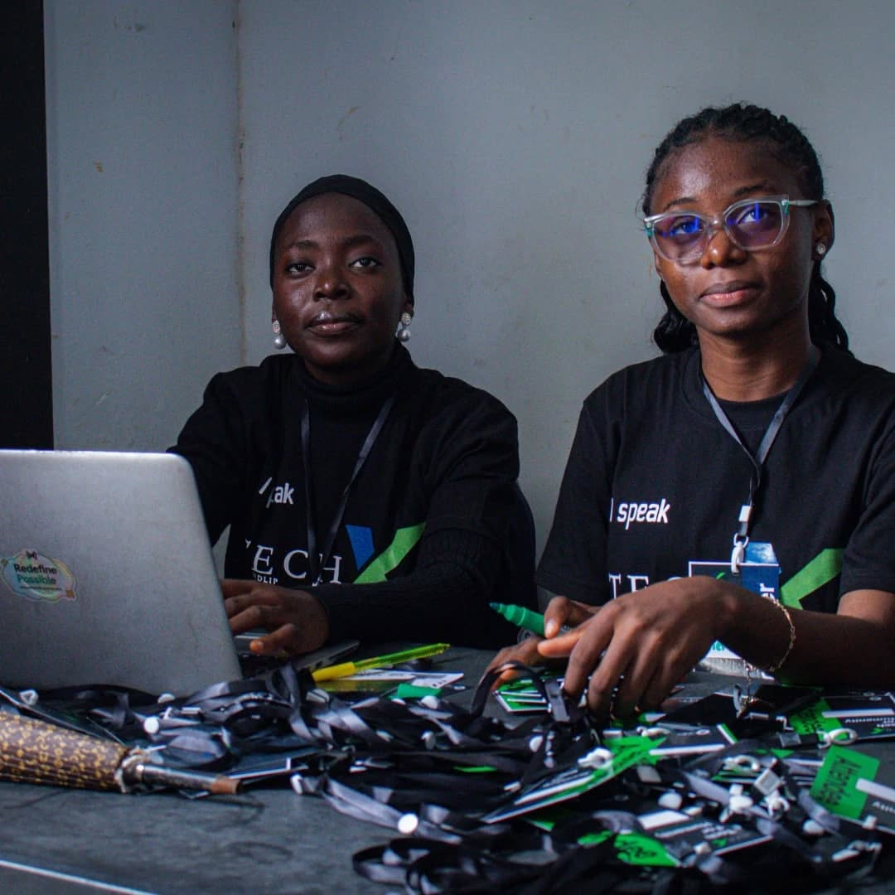
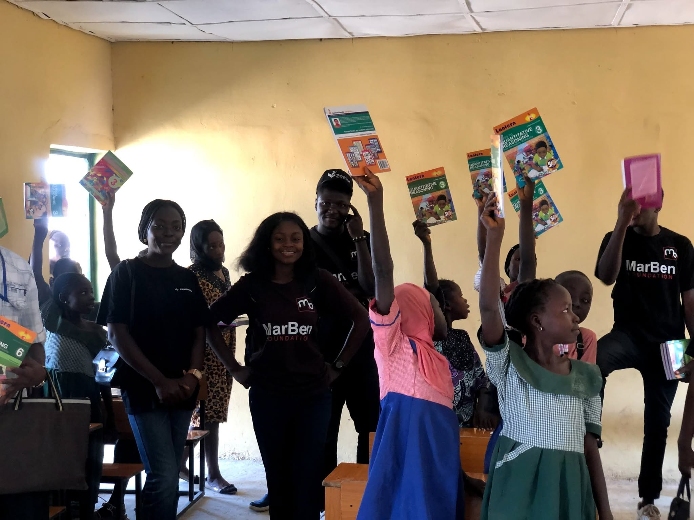
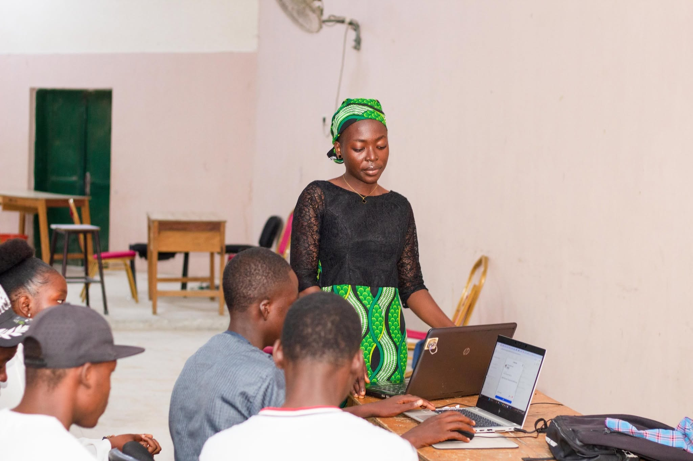

Visual Representation Learning
Understanding how vision models encode visual information and how learned representations transfer across datasets and tasks.
About
I am an M.Tech Computer Science and Engineering student specializing in Artificial Intelligence and Machine Learning at Shobhit Institute of Engineering & Technology, Meerut, India, under the supervision of Dr. Ruchi Holker.
My research interests are centered on visual representation learning, Vision Transformers, model capacity, and robust generalization under distribution shift.
I use synthetic-image and deepfake detection as a practical testbed for studying how visual models behave when the data distribution changes.
Before my M.Tech, I completed a B.Sc. in Computer Science at Taraba State University, Nigeria, in February 2025.

M.Tech CSE (AI/ML)
Shobhit Institute of Engineering & Technology
Research
My current work explores how visual models learn representations, how model capacity affects generalization, and how models respond when the data distribution changes.
Understanding how vision models encode visual information and how learned representations transfer across datasets and tasks.
Studying transformer-based visual architectures, their capacity, computational requirements, and representation quality.
Investigating why strong in-distribution performance can fail to transfer when the data source, generator, or visual distribution changes.
Exploring what should be changed or preserved when adapting vision foundation models to new environments and tasks.
Current Study
My current experimental work studies whether increasing model capacity necessarily improves robustness when a vision model encounters a new data distribution.
| Model | Seed | ID ROC-AUC | Cross ROC-AUC |
|---|---|---|---|
| DeiT-Tiny | 42 | 0.999899 | 0.523710 |
| DeiT-Tiny | 123 | 0.999950 | 0.511677 |
| ViT-Base | 42 | 0.998747 | 0.539869 |
These preliminary results show a large difference between in-distribution and cross-distribution performance. The study is ongoing, and the current evidence is not sufficient to make a general conclusion about model capacity.
Manuscripts
Selected manuscripts currently submitted and awaiting editorial or conference outcomes.
Submitted · Awaiting Outcome
Signal, Image and Video Processing
Submitted · Awaiting Outcome
ICCISS 2027
Projects
Experimental comparison of compact and larger Vision Transformer models under in-distribution and cross-distribution evaluation.
A research direction exploring the combination of spatial and frequency-domain information for more generalizable synthetic-image detection.
Experience
2026 – Present
Shobhit Institute of Engineering and Technology
Aug 2023 – Nov 2025
CRTV
Jan 2024 – May 2024
Sandlip Digital Consulting
Additional Experience
Beyond research, I work across media production, technical training, community outreach, and technology-driven activities.

Volunteering at technology events, supporting event coordination and attendee check-ins.

Engaging in practical activities that combine technology, collaboration, communication, and community participation.

Teaching practical livestreaming and production skills, including the use of vMix for live events and broadcasts.

Supporting technology-focused outreach activities that encourage digital skills and opportunities for young people.
Curriculum Vitae
My CV contains my education, research experience, publications, technical experience, and selected activities.
Contact
I am open to research conversations, academic collaborations, and opportunities related to computer vision and machine learning.